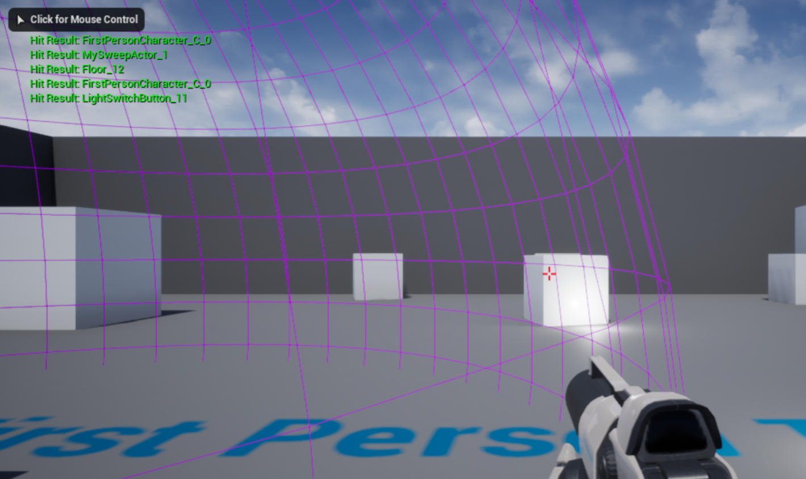

扫描多线轨迹
接上一节教程，本教程将说明如何使用 SweepMultiByChannel 返回给定半径内的结果。
创建一个新的 C++ Actor 子类并将其命名为 MySweepActor 。我们不会对默认头文件做任何修改。
下面是最终的头文件。
MySweepActor.h
#pragma once
#include "CoreMinimal.h"
#include "GameFramework/Actor.h"
#include "MySweepActor.generated.h"
UCLASS()
class UNREALCPP_API AMySweepActor : public AActor
{
GENERATED_BODY()
public:
// Sets default values for this actor's properties
AMySweepActor();
protected:
// Called when the game starts or when spawned
virtual void BeginPlay() override;
public:
// Called every frame
virtual void Tick(float DeltaTime) override;
};
在我们编写代码的逻辑之前，我们必须首先 #include "DrawDebugHelpers.h" 文件来帮助我们可视化 actor 。
#include "MySweepActor.h"
// include debug helpers
#include "DrawDebugHelpers.h"
在这个例子中，我们将在 BeginPlay() 函数中执行所有的逻辑。
首先，我们将创建一个由 FHitResults 组成的 TArray 撞击点数组，并将其命名为 OutHits。
我们希望扫描球体在相同的位置开始和结束，并通过使用 GetActorLocation 使它与 actor 的位置相等。碰撞球体可以是不同的形状，在这个例子中，我们将使用 FCollisionShape::makephere 使它成为一个球体，我们将它的半径设置为 500 个虚幻单位。接下来，运行 DrawDebugSphere 来可视化扫描球体。
然后，我们想要设置一个名为 isHit 的 bool 变量来检查我们的扫描是否击中了任何东西。
我们运行 GetWorld()->SweepMultiByChannel 来执行扫描通道跟踪并返回命中情况到 OutHits 数组中。
你可以在 这里 了解更多关于 SweepMultiByChannel 功能。如果 isHit 为真，我们将循环遍历 TArray 并打印出 hit actor 的名字和其他相关信息。
你可以在 这里 了解更多关于 TArray 的信息。
下面是最后的.cpp文件。
MySweepActor.cpp
#include "MySweepActor.h"
#include "DrawDebugHelpers.h"
// Sets default values
AMySweepActor::AMySweepActor()
{
// Set this actor to call Tick() every frame. You can turn this off to improve performance if you don't need it.
PrimaryActorTick.bCanEverTick = true;
}
// Called when the game starts or when spawned
void AMySweepActor::BeginPlay()
{
Super::BeginPlay();
// 创建保存撞击点的数组 TArray
TArray<FHitResult> OutHits;
// 开始和结束位置
FVector SweepStart = GetActorLocation();
FVector SweepEnd = GetActorLocation();
// 创建碰撞球
FCollisionShape MyColSphere = FCollisionShape::MakeSphere(500.0f);
// 绘制碰撞球
DrawDebugSphere(GetWorld(), GetActorLocation(), MyColSphere.GetSphereRadius(), 50, FColor::Purple, true);
// 检查扫描过程中是否有物体被击中
bool isHit = GetWorld()->SweepMultiByChannel(OutHits, SweepStart, SweepEnd, FQuat::Identity, ECC_WorldStatic, MyColSphere);
if (isHit)
{
// 遍历 TArray
for (auto& Hit : OutHits)
{
if (GEngine)
{
// 屏幕日志信息显示了被击中的内容
GEngine->AddOnScreenDebugMessage(-1, 5.f, FColor::Green, FString::Printf(TEXT("Hit Result: %s"), *Hit.Actor->GetName()));
// 取消注释以查看更多关于该参与者的信息
// GEngine->AddOnScreenDebugMessage(-1, 5.f, FColor::Red, FString::Printf(TEXT("All Hit Information: %s"), *Hit.ToString()));
}
}
}
}
// Called every frame
void AMySweepActor::Tick(float DeltaTime)
{
Super::Tick(DeltaTime);
}
最终运行的效果如下所示
